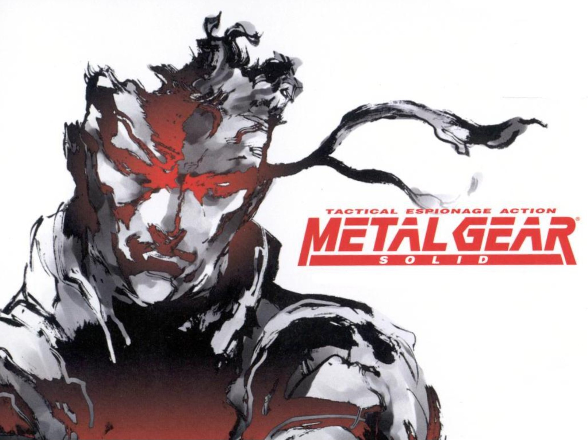

<!DOCTYPE html>
<html lang="es">
<head>
  <meta charset="UTF-8"/>
  <meta name="viewport" content="width=device-width,initial-scale=1.0"/>
  <link rel="icon" type="image/svg+xml" href="/assets/icons/favicon.svg">
  <link rel="icon" type="image/x-icon" href="/favicon.ico">
  <meta name="description" content="Verano del 97, el Eroski de toda la vida y una PlayStation de regalo sin tarjeta de memoria. Así empezó todo. Repaso los 14 juegos de PS1 a los que jugué e"/>
  <title>PS1: por qué su biblioteca sigue siendo la mejor de la historia ⬠Freakonia</title>
  <link rel="preconnect" href="https://fonts.googleapis.com"/>
  <link rel="preconnect" href="https://fonts.gstatic.com" crossorigin/>
  <link href="https://fonts.googleapis.com/css2?family=Press+Start+2P&family=VT323&display=swap" rel="stylesheet"/>
  <link rel="stylesheet" href="../css/main.css"/>
  <link rel="stylesheet" href="../css/components.css"/>
  <link rel="stylesheet" href="../css/animations.css"/>
  <link rel="stylesheet" href="../css/news.css"/>
</head>
<body>
<nav class="navbar" role="navigation" aria-label="Navegación principal">
  <div class="container">
    <a href="../index.html" class="nav-brand">‚a FREAKONIA</a>
    <button class="nav-toggle" id="nav-toggle" aria-label="Abrir menú">⼠MENU</button>
    <ul class="nav-menu" id="nav-menu">
      <li><a href="../index.html" class="nav-link">xè† Inicio</a></li>
      <li class="nav-dropdown">
        <span class="nav-link nav-dropdown-toggle">x}Æ GameDev ‚æ</span>
        <ul class="nav-submenu">
          <li><a href="../gamedev.html">x}Æ GameDev</a></li>
          <li><a href="../fallen-valkyrie.html">x FV Devlog</a></li>
        </ul>
      </li>
      <li class="nav-dropdown">
        <span class="nav-link nav-dropdown-toggle">x"π Gaming ‚æ</span>
        <ul class="nav-submenu">
          <li><a href="../gaming.html">x"π Gaming</a></li>
          <li><a href="../esports.html">xè  Esports</a></li>
          <li><a href="../quiz.html">x}Ø Quiz Retro</a></li>
        </ul>
      </li>
      <li class="nav-dropdown">
        <span class="nav-link nav-dropdown-toggle">xê0 Fantas√≠a ‚æ</span>
        <ul class="nav-submenu">
          <li><a href="../got.html">xê0 GoT</a></li>
          <li><a href="../warhammer.html">‚a" Warhammer</a></li>
          <li><a href="../magic.html">‚S® MtG</a></li>
          <li><a href="../rol.html">x}≤ Rol</a></li>
        </ul>
      </li>
      <li><a href="../nba.html" class="nav-link">xè¨ NBA</a></li>
      <li class="nav-dropdown">
        <span class="nav-link nav-dropdown-toggle">x° Comunidad ‚æ</span>
        <ul class="nav-submenu">
          <li><a href="../java.html">‚‹" Java</a></li>
          <li><a href="../social.html">x° Social</a></li>
        </ul>
      </li>
      <li><a href="../news.html" class="nav-link">x∞ News</a></li>
      <li><a href="../universo.html" class="nav-link">x∫ Universo</a></li>
      <li>
        <button class="lang-toggle" id="lang-toggle" aria-label="Cambiar idioma" title="Switch language / Cambiar idioma">
          xRê EN
        </button>
      </li>
    </ul>
  </div>
</nav>
<div class="page-header">
  <div class="container">
    <p class="page-header-pre"><a href="../news.html" style="color:inherit;text-decoration:none;">‚ ê NOTICIAS</a></p>
    <h1 class="page-header-title" style="font-size:clamp(0.6rem,2vw,1rem);line-height:1.6;">PS1: por qué su biblioteca sigue siendo la mejor de la historia</h1>
  </div>
</div>
<main>
  <div class="container" style="max-width:860px;">
    <article style="margin:var(--sp-6) 0;">
      <div style="display:flex;justify-content:space-between;align-items:center;margin-bottom:var(--sp-4);flex-wrap:wrap;gap:var(--sp-2);">
        <span class="news-card-cat news-cat--gaming" style="border-color:#00bfff;color:#00bfff;">x"π FREAKOCHAPA</span>
        <span class="news-card-date">x& 24 ¬∑ ABR ¬∑ 2026</span>
      </div>
      
      <div style="font-family:var(--font-secondary);font-size:1.25rem;line-height:1.8;color:var(--text-muted);margin-bottom:var(--sp-5);padding:var(--sp-4);border-left:4px solid #00bfff;">
        Verano del 97, el Eroski de toda la vida y una PlayStation de regalo sin tarjeta de memoria. Así empezó todo. Repaso los 14 juegos de PS1 a los que jugué en su momento y que siguen mereciendo tu tiempo hoy mismo. Con puntuaciones Freakcoin incluidas.
      </div>
      <div style="font-family:var(--font-secondary);font-size:1.15rem;line-height:1.9;">
        <p class="article-paragraph">Todas aprobadas. Verano del 97, centro comercial Ruta de la Plata, el Eroski de toda la vida, y tus padres te compran la PS1. Sin tarjeta de memoria ‚¨no sab√≠amos a√∫n ni que exist√≠an‚¨, un CD de demos y de regalo el Loaded versi√≥n Platinum, que era la l√≠nea econ√≥mica que sacaba Sony para que los juegos te salieran m√°s baratos. Imag√≠nate el percal de jugar al Loaded o a cualquier cosa que nos alquil√°bamos entonces, sin poder guardar la partida. Luego cayeron la tarjeta de memoria y otro mando. Y poco despu√©s fuimos bendecidos con el FFVII, que ya tiene aqu√≠ su propio reportaje.</p>
<p class="article-paragraph"><strong>1. Metal Gear Solid</strong> ⬠Una barrabasada adelantada a su época. Era como vivir una película: mezcla de acción, sigilo, cinemáticas increíbles y el mejor doblaje al español que jamás ha tenido un videojuego. ¡Snake! ¡Snaaaaaake! <span style="display:inline-block;font-family:'Press Start 2P',monospace;font-size:8px;color:#ffcc00;border:2px solid #ffcc00;padding:3px 7px;margin-left:6px;vertical-align:middle;">⣠10 / 10 FREAKCOINS</span></p>
<p class="article-paragraph"><strong>2. Final Fantasy VII / IX</strong> ‚¨ El primer JRPG que lleg√≥ a Europa, y peg√≥ fuerte, muy fuerte. Banda sonora maravillosa, historia larga y emocionante ‚¨a pesar de la traducci√≥n que tra√≠a‚¨, combate por turnos, fondos prerenderizados, invocaciones, materias, magias y un villano terrible. Lo tiene todo. Incluyo tambi√©n al FFIX: son imprescindibles los dos. <span style="display:inline-block;font-family:'Press Start 2P',monospace;font-size:8px;color:#ffcc00;border:2px solid #ffcc00;padding:3px 7px;margin-left:6px;vertical-align:middle;">‚£ 10 / 10 FREAKCOINS</span></p>
<p class="article-paragraph"><strong>3. Castlevania: Symphony of the Night</strong> ‚¨ Un juegarral como la copa de un pino. Un solo mapa ‚¨el castillo de Dr√°cula‚¨, pero enorme y lleno de miles de sorpresas. Un metroidvania fabuloso con toques de rol, miles de armas y objetos, y una est√©tica que sigue siendo preciosa a d√≠a de hoy. <span style="display:inline-block;font-family:'Press Start 2P',monospace;font-size:8px;color:#ffcc00;border:2px solid #ffcc00;padding:3px 7px;margin-left:6px;vertical-align:middle;">‚£ 10 / 10 FREAKCOINS</span></p>
<p class="article-paragraph"><strong>4. Oddworld: Abe's Oddysee</strong> ⬠El del marcianito que tiene que rescatar a sus congéneres de la tiranía de los malvados que los explotan en fábricas. Podías controlar mentalmente a los enemigos; era como una especie de Príncipe de Persia moderno. Buenísimo. <span style="display:inline-block;font-family:'Press Start 2P',monospace;font-size:8px;color:#00ff41;border:2px solid #00ff41;padding:3px 7px;margin-left:6px;vertical-align:middle;">⣠7 / 10 FREAKCOINS</span></p>
<p class="article-paragraph"><strong>5. Alundra</strong> ⬠El Zelda de la PlayStation. Maravillosamente difícil, puzles complejos, una jugabilidad superchula y un mapa precioso. El juego es largo y complicado, pero muy agradecido. Es de esos tesoros ocultos que merecen mucho más reconocimiento. <span style="display:inline-block;font-family:'Press Start 2P',monospace;font-size:8px;color:#cc44ff;border:2px solid #cc44ff;padding:3px 7px;margin-left:6px;vertical-align:middle;">⣠8 / 10 FREAKCOINS</span></p>
<p class="article-paragraph"><strong>6. Grand Theft Auto</strong> ⬠El precursor, los orígenes, el que lo empezó todo. Con esa vista desde arriba tan complicada para conducir y moverte por la ciudad. Cuántos recuerdos yendo a las cabinas de teléfono a recoger misiones y usando los Kill Frenzy a saco. ¡Tremendo! <span style="display:inline-block;font-family:'Press Start 2P',monospace;font-size:8px;color:#00ff41;border:2px solid #00ff41;padding:3px 7px;margin-left:6px;vertical-align:middle;">⣠6 / 10 FREAKCOINS</span></p>
<p class="article-paragraph"><strong>7. Gran Turismo</strong> ⬠Yo no soy de juegos de coches, pero este es maravilloso. Tienes que sacarte el carné y todo. Todo tipo de modos de juego, competiciones y un catálogo enorme de coches. ¡Sensacional! <span style="display:inline-block;font-family:'Press Start 2P',monospace;font-size:8px;color:#cc44ff;border:2px solid #cc44ff;padding:3px 7px;margin-left:6px;vertical-align:middle;">⣠8 / 10 FREAKCOINS</span></p>
<p class="article-paragraph"><strong>8. Legacy of Kain: Soul Reaver</strong> ⬠Una aventura dentro de Nosgoth y sus nueve Pilares, donde cada pilar está representado por un guardián. Qué precioso era el protagonista Raziel, ese vampiro convertido en espectro con un destino trágico. Muy entretenido. <span style="display:inline-block;font-family:'Press Start 2P',monospace;font-size:8px;color:#00ff41;border:2px solid #00ff41;padding:3px 7px;margin-left:6px;vertical-align:middle;">⣠7 / 10 FREAKCOINS</span></p>
<p class="article-paragraph"><strong>9. Resident Evil 2</strong> ⬠El no va más. ¿Quién no recuerda a esos policías enfrentándose a los zombis en Raccoon City? Qué duro era ese primer monstruo en el pasillo, y lo complicado que se iba volviendo el juego. Muchísimo miedo y muchísima acción. <span style="display:inline-block;font-family:'Press Start 2P',monospace;font-size:8px;color:#cc44ff;border:2px solid #cc44ff;padding:3px 7px;margin-left:6px;vertical-align:middle;">⣠9 / 10 FREAKCOINS</span></p>
<p class="article-paragraph"><strong>10. Silent Hill</strong> ⬠Más miedo todavía. La niebla constante, los perros rabiosos, la linterna, el sonido de la alarma, el mapa. Un clásico entre los clásicos. Hoy los controles son torpes y ortopédicos, pero sigue siendo un juegarral. <span style="display:inline-block;font-family:'Press Start 2P',monospace;font-size:8px;color:#cc44ff;border:2px solid #cc44ff;padding:3px 7px;margin-left:6px;vertical-align:middle;">⣠8 / 10 FREAKCOINS</span></p>
<p class="article-paragraph"><strong>11. Tekken 3</strong> ⬠El juego de peleas por excelencia. A día de hoy sigue siendo mejor que muchos Tekkens más modernos. Me sé aún combos de memoria de un montón de luchadores. ¡El mejor Tekken! <span style="display:inline-block;font-family:'Press Start 2P',monospace;font-size:8px;color:#ffcc00;border:2px solid #ffcc00;padding:3px 7px;margin-left:6px;vertical-align:middle;">⣠10 / 10 FREAKCOINS</span></p>
<p class="article-paragraph"><strong>12. Tomb Raider</strong> ⬠Maravilloso y espectacular. Aventuras con Lara en la búsqueda de llaves, ruedas de motor o lo que hiciera falta. Inolvidable la aparición del T-Rex en uno de los niveles principales. <span style="display:inline-block;font-family:'Press Start 2P',monospace;font-size:8px;color:#00ff41;border:2px solid #00ff41;padding:3px 7px;margin-left:6px;vertical-align:middle;">⣠7 / 10 FREAKCOINS</span></p>
<p class="article-paragraph"><strong>13. Tenchu: Stealth Assassins</strong> ⬠El mejor juego de ninjas jamás hecho. A pesar de ser tosco a día de hoy y tener unos gráficos lamentables, tiene una banda sonora apoteósica. Completar los niveles a sigilo total es un auténtico reto. ¡JUEGACO! <span style="display:inline-block;font-family:'Press Start 2P',monospace;font-size:8px;color:#ffcc00;border:2px solid #ffcc00;padding:3px 7px;margin-left:6px;vertical-align:middle;">⣠10 / 10 FREAKCOINS</span></p>
<p class="article-paragraph"><strong>14. Tony Hawk's Pro Skater</strong> ⬠Qué desfase pillarte a los skaters de moda del momento y ponerte a rodar a saco por las pistas. Inolvidable. <span style="display:inline-block;font-family:'Press Start 2P',monospace;font-size:8px;color:#00bfff;border:2px solid #00bfff;padding:3px 7px;margin-left:6px;vertical-align:middle;">⣠5 / 10 FREAKCOINS</span></p>
<p class="article-paragraph">Y seguro que me dejo muchos más, pero con esta pedazo de lista da para mucho, como la trucha al trucho. El catálogo de PS1 sigue siendo, a día de hoy, una barbaridad.</p>
      </div>
      <div style="margin-top:var(--sp-6);padding-top:var(--sp-4);border-top:2px solid var(--border-color);">
        <div class="news-card-tags" style="margin-bottom:var(--sp-4);"><span class="tag">PS1</span><span class="tag">PlayStation</span><span class="tag">retro gaming</span><span class="tag">Metal Gear Solid</span><span class="tag">Final Fantasy VII</span><span class="tag">Tekken 3</span><span class="tag">Resident Evil 2</span><span class="tag">Freakochapa</span></div>
        <div style="display:flex;gap:var(--sp-3);flex-wrap:wrap;">
          <a href="gaming.html" target="_blank" rel="noopener" class="btn">>> FUENTE: freakonia.com</a>
          <a href="../gaming.html" class="btn btn-pink">>> IR A Gaming</a>
          <a href="../news.html" class="btn btn-small" style="border-color:var(--text-dim);color:var(--text-dim);">‚ ê TODAS LAS NOTICIAS</a>
        </div>
      </div>
    </article>
  </div>
</main>
<footer class="site-footer">
  <div class="container">
    <ul class="footer-links">
      <li><a href="../index.html">Inicio</a></li>
      <li><a href="../gamedev.html">GameDev</a></li>
      <li><a href="../gaming.html">Gaming</a></li>
      <li><a href="../esports.html">Esports</a></li>
      <li><a href="../got.html">GoT</a></li>
      <li><a href="../warhammer.html">Warhammer</a></li>
      <li><a href="../magic.html">MtG</a></li>
      <li><a href="../rol.html">Rol</a></li>
      <li><a href="../nba.html">NBA</a></li>
      <li><a href="../java.html">Java</a></li>
      <li><a href="../social.html">Social</a></li>
      <li><a href="../news.html">News</a></li>
    </ul>
    <p>‚a FREAKONIA ‚¨ KARLETE</p>
    <p style="color:#444;">HECHO CON AMOR PIXELADO Y DEMASIADAS BEBIDAS ENERG√0TICAS</p>
    <p style="color:#333;">‚ INSERT COIN ‚∫</p>

    <div class="footer-legal">
      <div class="pixel-divider"></div>
      <p class="footer-copyright">
        © 2025 FREAKONIA ⬠KARLETE. ALL RIGHTS RESERVED.
      </p>
      <p class="footer-trademark">
        FREAKONIA‚¢ IS A REGISTERED PERSONAL BRAND.
        ALL CONTENT, DESIGNS, GAME CONCEPTS AND ORIGINAL TEXTS
        ON THIS SITE ARE THE EXCLUSIVE PROPERTY OF THEIR AUTHOR.
        UNAUTHORIZED REPRODUCTION, DISTRIBUTION OR USE OF ANY
        CONTENT IS STRICTLY PROHIBITED WITHOUT PRIOR WRITTEN PERMISSION.
      </p>
      <p class="footer-notice">
        ‚a† THIS SITE CONTAINS STRONG OPINIONS ABOUT VIDEO GAMES,
        FANTASY LORE AND BASKETBALL. READER DISCRETION IS ADVISED.
        NO GOBLINS WERE HARMED IN THE MAKING OF THIS WEBSITE.
      </p>
    </div>
  </div>
</footer>
<script src="../js/articles-index.js"></script>
<script src="../js/article-page.js"></script>
<script src="../js/main.js"></script>
</body>
</html>
